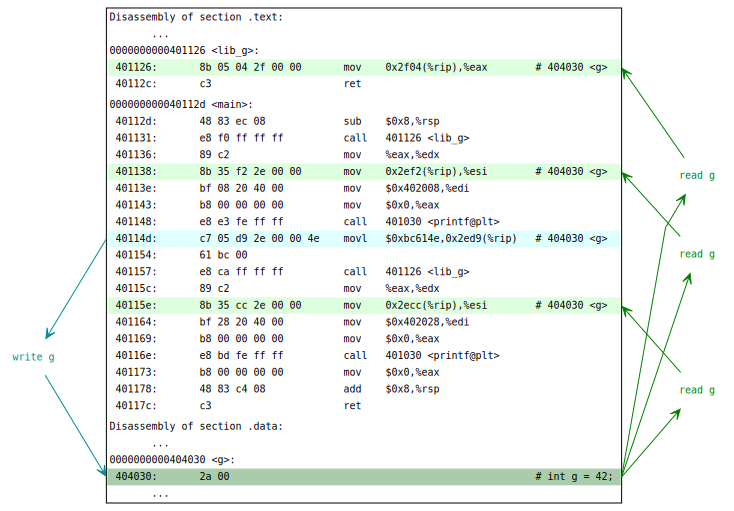

Dynamic linking is hard (SuperH version)
I got a bit more free weekend time and I’m slowly going through a backlog of topics to write about.
Today I’ll write about the GHC bug from 4 years ago.
The problem
John Paul Adrian Glaubitz found yet another interesting case of GHC doing something very unusual.
Namely ghc-pkg was not able to print it’s own version when (and only when) redirected to a … pipe(!):
# good:
$ ghc-pkg --version
GHC package manager version 8.2.2
# bad:
$ ghc-pkg --version | cat
“Looks like a very simple coding error” was my thought. I attempted the same test on ghc-HEAD and reproduced strange behaviour.
ghc-pkg is a simple single-source tool. It was easy to reduce the original down to the following minimal example:
-- a.hs
import System.IO
main :: IO ()
main = do
hSetBuffering stdout (BlockBuffering Nothing)
hPutStrLn stdout "hello"Quiz question: what do you think is a bug here?
The caveat is that all this happens on SuperH architecture.
$ inplace/bin/ghc-stage1 --make a.hs -O1 -dynamic
$ /usr/bin/qemu-sh4 -L /usr/sh4-unknown-linux-gnu/ ./a
<empty>Already see the bug? Me neiter.
What is SuperH?
SuperH (or sh) is a 32-bit RISC architecture designed by Hitachi. Sega Saturn, Sega 32X and Sega Dreamcast all use sh-based chips. SuperH also hides in many controllers like CD-ROM.
SuperH recently got new life in development community after a bunch of related patents expired in 2015.
From a software development standpoint (as in, shared bugs) sh feels like m68k. For example it’s instruction length is 2 bytes which drives some low-level toolchain decisions to be similar to m68k.
Let’s have a look at a disassembly of a fabs function in glibc to get a feel for this architecture:
000213cc <fabs@@GLIBC_2.2>:
213cc: c6 2f mov.l r12,@-r15
213ce: 0e c7 mova 21408 <fabs@@GLIBC_2.2+0x3c>,r0
213d0: 0d dc mov.l 21408 <fabs@@GLIBC_2.2+0x3c>,r12 ! 76c00
213d2: 0e d3 mov.l 2140c <fabs@@GLIBC_2.2+0x40>,r3 ! 48
213d4: 0c 3c add r0,r12
213d6: 4c f0 fmov fr4,fr0
213d8: 22 4f sts.l pr,@-r15
213da: c3 62 mov r12,r2
213dc: 3c 32 add r3,r2
213de: 22 62 mov.l @r2,r2
213e0: fc 7f add #-4,r15
213e2: 5c f1 fmov fr5,fr1
213e4: 22 63 mov.l @r2,r3
213e6: 32 2f mov.l r3,@r15
213e8: 00 e3 mov #0,r3
213ea: f2 67 mov.l @r15,r7
213ec: 22 63 mov.l @r2,r3
213ee: 70 33 cmp/eq r7,r3
213f0: 00 e7 mov #0,r7
213f2: 00 e3 mov #0,r3
213f4: 04 8f bf.s 21400 <fabs@@GLIBC_2.2+0x34>
213f6: 5d f0 fabs fr0
213f8: 04 7f add #4,r15
213fa: 26 4f lds.l @r15+,pr
213fc: 0b 00 rts
213fe: f6 6c mov.l @r15+,r12
21400: 03 d7 mov.l 21410 <fabs@@GLIBC_2.2+0x44>,r7 ! fffe5a52
21402: 03 07 bsrf r7
21404: 09 00 nop
21406: 09 00 nop
21408: 00 6c mov.b @r0,r12
2140a: 07 00 mul.l r0,r0
2140c: 48 00 .word 0x0048
2140e: 00 00 .word 0x0000
21410: 52 5a mov.l @(8,r5),r10
21412: fe ff fmac fr0,fr15,fr15A few things to note here:
Instructions are only 2 bytes long. This makes the task of encoding large branch offsets especially tricky: you need to store 32-bit offset somere in nearby memory. In the example above it’s .word 0x0048; .word 0x0000.
r15 is a stack pointer
SuperH support increments/decrements as part of the main instruction:
- sts.l pr,@-r15: push return address on stack (pre-decrement)
- lds.l @r15+,pr: pop return address from stack (post-increment)
There are FPU instructions like fabs itself.
Handy! But it does not really matter all that for our particular bug :)
The gist of the bug
Before digging deeper into the bug I tried the same reproducer on a bunch of targets using qemu and using real hardware where I could reach. Results were:
- broken: sh4 and m68k
- working: x86_64, mipsn32, powerpc, powerpc64, sparc
x86_64 and powerpc{,64} are targets with native GHC code generation. mips, sparc, sh4 and m68k are via-C (unregisterised) targets. Thus it’s probably not just a bug in unregisterised backend.
It also not just 32 vs 64 bit bug (sparc is 32-bit here).
I dug a bit more into the failure and found that haskell-level System.IO.stdout closure (rough equivalent of C’s stdout global) is present in memory in multiple places! And different pieces of code access different copies of it.
Specifically the code that initialises System.IO.stdout fills all fields diligently. But code that writes to it uses default object full of zeros.
Jessica Clarke pointed at GHC’s use of -Bsymbolic linker option that breaks various C-level assumptions. GHC’s native code generator specifically tries to generate code compatible with -Bsymbolic. But when unregisterised backend is used GHC has no control of what gcc produces. And gcc breaks the assumptions.
In GHC’s case -Bsymbolic is a performance optimization. It’s not a requirement to get haskell compiler on a platform. Thus the simple fix was to avoid use of it in unregisterised codegen with the patch:
--- a/compiler/main/SysTools.hs
+++ b/compiler/main/SysTools.hs
@@ -548,1 +548,1 @@ linkDynLib dflags0 o_files dep_packages
let bsymbolicFlag = -- ...
- ["-Wl,-Bsymbolic"]
+ ["-Wl,-Bsymbolic" | not unregisterised]But how exactly did it break?
The above probably does not make much sense. What is -Bsymbolic? Why does it make things worse if it’s just an optimization? Why do some unreg targets are not affected?
Let’s look at a smaller example in C:
/* lib.c: */
int g = 42;
int lib_g(void) { return g; }/* prog.c */
#include <stdio.h>
/* declarations from lib.c */
extern int g;
int lib_g(void);
int main() {
printf("before: main.g=%i; lib_g()=%i\n", g, lib_g());
g = 12345678; /* Was 42. */
printf("after: main.g=%i; lib_g()=%i\n", g, lib_g());
return 0;
}Here we have library code with one global variable g and a getter function lib_g(). And a main program where main() function prints initial value of g global directly and via lib_g() getter. We also change g value directly and print result again.
Nothing too complicated.
Here is how things work when we build it as a single executable:
$ gcc -O1 lib.c prog.c -o good
$ ./good
before: main.g=42; lib_g()=42
after: main.g=12345678; lib_g()=12345678No surprise here:
- before the store both g and lib_g() return 42
- after the store both g and lib_g() return 12345678
It’s trivial. What could possible go wrong here?
Now let’s try to build the same source as a pair of executable and it’s shared library:
$ gcc -O1 -shared -fPIC lib.c -o libbug.so
$ gcc -O1 -fno-PIC -fno-PIE -no-pie prog.c -o good-shared -L. -lbug '-Wl,-rpath=$ORIGIN'
$ ./good-shared
before: main.g=42; lib_g()=42
after: main.g=12345678; lib_g()=12345678Same thing.
To be even clearer the data flow is the following:
Here green arrows denote data reads, light green boxes denote intructions that perform reads. Cyan shade shows the writes and write instructions.
All the paths directly or indirectly read and write the same g location. Seems like no place to go wrong, right?
Now let’s add a -Wl,-Bsymbolic linker option used by GHC. man ld says:
-Bsymbolic
When creating a shared library, bind references to global symbols to the
definition within the shared library, if any. Normally, it is possible for
a program linked against a shared library to override the definition within
the shared library. This option is only meaningful on ELF platforms which
support shared libraries.Overrides usually happen when we define a symbol in multiple places: one in shared library and another in executable program. One of them has to win. LD_PRELOAD frequently relies on symbol override semantics.
But does our program override any definitions? If feels like we don’t do anything special: we define all the things once and use them the simplest way possible, right?
Let’s try:
$ gcc -O1 -shared -fPIC lib.c -o libbug.so -Wl,-Bsymbolic
$ gcc -O1 -fno-PIC -fno-PIE -no-pie prog.c -o symbolic-shared -L. -lbug '-Wl,-rpath=$ORIGIN'
$ ./symbolic-shared
before: main.g=42; lib_g()=42
after: main.g=12345678; lib_g()=42Whoops. What happens here? Why do g and lib_g() see different values?
Let’s look at final generated code. I’ll start from simplest case without an external library where things stil worked. Building:
$ gcc -O1 lib.c prog.c -o good
$ objdump -DR goodPeeking inside:
Disassembly of section .text:
...
0000000000401126 <lib_g>:
401126: 8b 05 04 2f 00 00 mov 0x2f04(%rip),%eax # 404030 <g>
40112c: c3 ret
000000000040112d <main>:
40112d: 48 83 ec 08 sub $0x8,%rsp
401131: e8 f0 ff ff ff call 401126 <lib_g>
401136: 89 c2 mov %eax,%edx
401138: 8b 35 f2 2e 00 00 mov 0x2ef2(%rip),%esi # 404030 <g>
40113e: bf 08 20 40 00 mov $0x402008,%edi
401143: b8 00 00 00 00 mov $0x0,%eax
401148: e8 e3 fe ff ff call 401030 <printf@plt>
40114d: c7 05 d9 2e 00 00 4e movl $0xbc614e,0x2ed9(%rip) # 404030 <g>
401154: 61 bc 00
401157: e8 ca ff ff ff call 401126 <lib_g>
40115c: 89 c2 mov %eax,%edx
40115e: 8b 35 cc 2e 00 00 mov 0x2ecc(%rip),%esi # 404030 <g>
401164: bf 28 20 40 00 mov $0x402028,%edi
401169: b8 00 00 00 00 mov $0x0,%eax
40116e: e8 bd fe ff ff call 401030 <printf@plt>
401173: b8 00 00 00 00 mov $0x0,%eax
401178: 48 83 c4 08 add $0x8,%rsp
40117c: c3 ret
Disassembly of section .data:
...
0000000000404030 <g>:
404030: 2a 00 sub (%rax),%al
...Here our global variable g is located in .data section at 0x404030 address. gcc used most efficient code to access it by using RIP-relative addressing:
- read via: mov 0x2ef2(%rip),%esi # 404030 <g>.
- write via: movl $0xbc614e,0x2ed9(%rip) # 404030 <g>
Note that 0x2ef2(%rip) is a fixed offset from the current instruction. In this case it always refers to 0x404030 address of g and does not depend on any other library that could be loaded into address space along the program.
There is the picture form of the above (same legend as in previous picture):

It should be obvious from the picture that all the reads and writes to g happen at the same 0x404030 location.
Now let’s have a look at our broken example. Building:
$ gcc -O1 -shared -fPIC lib.c -o libbug.so -Wl,-Bsymbolic
$ gcc -O1 -fno-PIC -fno-PIE -no-pie prog.c -o symbolic-shared -L. -lbug '-Wl,-rpath=$ORIGIN'
$ objdump -DR libbug.so
$ objdump -DR symbolic-sharedPeeking inside.
Let’s first look at libbug.so:
Disassembly of section .text:
00000000000010f9 <lib_g>:
10f9: 48 8d 05 20 2f 00 00 lea 0x2f20(%rip),%rax # 4020 <g>
1100: 8b 00 mov (%rax),%eax
1102: c3 ret
Disassembly of section .data:
...
0000000000004020 <g>:
4020: 2a 00 sub (%rax),%al
...The code (.text) part is almost identical to our prog case. Except that instead of direct mov 0x2f04(%rip),%eax instruction it uses a pair of instructions: lea 0x2f20(%rip),%rax / mov (%rax),%eax. Both forms are semantically equivalent.
Homework question: why does libbug.so use less efficient encoding?
The data (.data) part hosts g global variable at 0x4020 address. It’s not a real address as shared libraries could normally be loaded at any address. We would need to add a base address to every address we see. But we can pretend for now the library will be loaded at address 0 and all the addresses we see are real and valid.
symbolic-shared has a few new things:
Disassembly of section .text:
...
0000000000401136 <main>:
401136: 48 83 ec 08 sub $0x8,%rsp
40113a: e8 f1 fe ff ff call 401030 <lib_g@plt>
40113f: 89 c2 mov %eax,%edx
401141: 8b 35 f1 2e 00 00 mov 0x2ef1(%rip),%esi # 404038 <g@@Base>
401147: bf 08 20 40 00 mov $0x402008,%edi
40114c: b8 00 00 00 00 mov $0x0,%eax
401151: e8 ea fe ff ff call 401040 <printf@plt>
401156: c7 05 d8 2e 00 00 4e movl $0xbc614e,0x2ed8(%rip) # 404038 <g@@Base>
40115d: 61 bc 00
401160: e8 cb fe ff ff call 401030 <lib_g@plt>
401165: 89 c2 mov %eax,%edx
401167: 8b 35 cb 2e 00 00 mov 0x2ecb(%rip),%esi # 404038 <g@@Base>
40116d: bf 28 20 40 00 mov $0x402028,%edi
401172: b8 00 00 00 00 mov $0x0,%eax
401177: e8 c4 fe ff ff call 401040 <printf@plt>
40117c: b8 00 00 00 00 mov $0x0,%eax
401181: 48 83 c4 08 add $0x8,%rsp
401185: c3 ret
...
Disassembly of section .bss:
0000000000404038 <g>:
404038: 00 00 add %al,(%rax)
404038: R_X86_64_COPY g@@Base
...On the surface main() has identical code to our prog case as well: same RIP-relatve addressing to reach local g. Except that g is not supposed to be local! It’s loaded from unknown address in external shared library! How did it get into our binary?
gcc code generator assumes it’s local and relies on so called COPY relocation (R_X86_64_COPY in our case) to copy data from external library into the executable binary.
Effectively that means that at load time we will have two independen copies of g:
- one in libbug.so at address 0x4020 used by lib_g() function
- and another in symbolic-shared binary at address 0x404038 used by main() direct references.
Or the same in pictures:
Compared to previous pictures blue arrows show load-time data copy from library data into binary data. And red arrow shows reads from stale source location.
Note that main() always reads and write only local copy of g. It never looks at libbug.so’s original. While lib_g() only ever uses libbug.so’s original.
That is the negative effect of -Wl,-Bsymbolic: we effectively got two independent g global variables that only happen to share initial value at startup time.
So how does it work at all without -Wl,-Bsymbolic? We did not pass that linker flag to the final binary. Only shared library was “corrupted” by it.
Quick quiz: what is you guess? Would the COPY relocation disappear magically? Or library code would transform into something else?
Let’s have a look at a working shared library example now. Building:
$ gcc -O1 -shared -fPIC lib.c -o libbug.so
$ gcc -O1 -fno-PIC -fno-PIE -no-pie prog.c -o good-shared -L. -lbug '-Wl,-rpath=$ORIGIN'
$ objdump -DR libbug.so
$ objdump -DR good-sharedPeeking inside. libbug.so:
Disassembly of section .text:
...
00000000000010f9 <lib_g>:
10f9: 48 8b 05 e8 2e 00 00 mov 0x2ee8(%rip),%rax # 3fe8 <g@@Base-0x38>
1100: 8b 00 mov (%rax),%eax
1102: c3 ret
Disassembly of section .got:
0000000000003fd8 <.got>:
...
3fe8: R_X86_64_GLOB_DAT g@@Base
Disassembly of section .data:
...
0000000000004020 <g>:
4020: 2a 00 sub (%rax),%al
...This time the code is a bit different from prog and -Bsymbolic case.
g is read not by one mov instruction as before, but by two. Now we have an indirection (via .got, Global Offset Table) where real address of g is stored. And library does not know it’s own global variable address!
And good-shared executable is exactly the same as symbolic-shared:
Disassembly of section .text:
0000000000401136 <main>:
401136: 48 83 ec 08 sub $0x8,%rsp
40113a: e8 f1 fe ff ff call 401030 <lib_g@plt>
40113f: 89 c2 mov %eax,%edx
401141: 8b 35 f1 2e 00 00 mov 0x2ef1(%rip),%esi # 404038 <g@@Base>
401147: bf 08 20 40 00 mov $0x402008,%edi
40114c: b8 00 00 00 00 mov $0x0,%eax
401151: e8 ea fe ff ff call 401040 <printf@plt>
401156: c7 05 d8 2e 00 00 4e movl $0xbc614e,0x2ed8(%rip) # 404038 <g@@Base>
40115d: 61 bc 00
401160: e8 cb fe ff ff call 401030 <lib_g@plt>
401165: 89 c2 mov %eax,%edx
401167: 8b 35 cb 2e 00 00 mov 0x2ecb(%rip),%esi # 404038 <g@@Base>
40116d: bf 28 20 40 00 mov $0x402028,%edi
401172: b8 00 00 00 00 mov $0x0,%eax
401177: e8 c4 fe ff ff call 401040 <printf@plt>
40117c: b8 00 00 00 00 mov $0x0,%eax
401181: 48 83 c4 08 add $0x8,%rsp
401185: c3 ret
...
Disassembly of section .bss:
0000000000404038 <g>:
404038: 00 00 add %al,(%rax)
404038: R_X86_64_COPY g@@Base
...Here we see the same pattern: again g is copied out of it’s real location (libbug.so provides symbol contents) and the rest of program uses this copy.
The same in pictures:
Magenta arrows shows the code that reads final address of g global variable. Note that now nothing (aside from COPY relocation) reads original g global variable at 0x4020 address: everything including libbug.so uses executable’s copy of g at address 0x404038.
Now we can make -Wl,-Bsymbolic work for us by enabling -fPIC code on final executable:
$ gcc -O1 -shared -fPIC lib.c -o libbug.so -Wl,-Bsymbolic
$ gcc -O1 -fno-PIC -fno-PIE -no-pie prog.c -o symbolic-shared -L. -lbug '-Wl,-rpath=$ORIGIN' -fPIC
./symbolic-shared
before: main.g=42; lib_g()=42
after: main.g=12345678; lib_g()=12345678Works as expected! Homework quiz: why does it work?
Parting words
Note that with -fPIC gcc generates the code to always go through .got indirection to both allow for easy override (interposition) and to allow final executables to have more efficient access to globals without .got indirection.
This effectively penaizes library code in favour of speeding up binary code. This tradeoff implies that most of the time library globals will be accessed from outside the library (rather than inside the library). To get these limitations around performance critical libraries (like glibc) go to the great lengths to avoid use of externally visible global symbols and use sorts of attribute((visibility(“hidden”))) / -fvisibility=hidden to get performance back.
GHC’s strategy is to use -Bsymbolic to prioritize library code access and be careful about using -fPIC style code on executables.
COPY relocations have all sorts of unusual side-effects. They actually copy data (which might take a considerable startup time for large programs), they leak object sizes across binaries (as one needs to know how much to copy). Nettle bug is an interesting case of ABI breakage of the past.
Have fun!